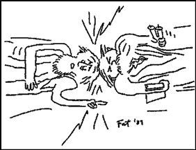

|
Lunch With The Fat Man | 1, 2, 3
"For Every Philosophy There Is an Equal and Opposite Philosophy" or "Rule of Thumb Wrestling"
Hi. Sit down. What are you having? Welcome to Lunch With The Fat Man.
It's been long observed that words of wisdom are easy to refute with other words of wisdom. For example:
" A stitch in time saves nine." can be countered with "Haste makes waste."
Anything Timothy Leary says can be handsomely argued against by G. Gordon Liddy, and anything Gordon says can be as elegantly put down by Tim.
The great "All We Are Is Dust in the Wind" can be refuted with the equally potent "You are Everything, And Everything is You."
It goes on and on, continuing into the world of music, creating dichotomies that can wreck any and every rule of thumb ever tossed off by band leader trying to rationalize his Dylan-like vocals and Scholtz-like songwriting, or his desire to have his girlfriend front the band.
The following are some of the fundamental cornerstones that set in the motions the wheels of progress in the music business, but I've set them facing each other to dispel the myth that there exist any formulae for fame and/or fortune. These are all legitimate statements, each made at one time or another by some authentic human being involved in the recording business.
"The only way to sell your music is with a fully produced, album- ready demo." Of course, you'll also hear that "The only way to sell your music is with a sparse, incomplete sketch, so that the producers can read their own ideas into the spaces."
Close miking is the only way to get the isolated sounds you need to make modern multitrack recordings successfully. Yet, the only way to get the full sound of an instrument is to record from a distance, to include the sound of the room, and to give low end sound waves a chance to develop fully.
"The cream always rises to the top." On the other hand, "There's nothing but trash on the radio."
The best ideas are spontaneous, and happen in an instant. In today's music market you'll need a lot of time in the studio to carefully craft that spontaneous sound.
“Give the people what they want." But remember, "Don't sellout."
 The Beatles, and all the other greats were great because they were unique, but how many groups have tried to be the next Beatles? (By the same token, your poor A&R guys are looking for unique acts who fit established patterns for record sales - good luck.)
You have to work out your communication with your audience by playing live. That's so you can go into a dead room, isolate your drummer in a closet full of pillows, put on headphones, and record a song every four days for them correctly.
Of course, your unique style is a result of the cumulative influence of your roots, so respect those influences, and convey them truly, directly, undiluted, and unchanged.
You need a relentless groove, but with significant changes every 7 seconds.
You have to believe you're the greatest, no matter what, and will make it to the top. Or, you can stay open to feedback, listen to suggestions, and keep your ego in check, which you also have to do.
These are the contradictions - nay, paradoxes - of the world of music. I say paradoxes because they only contradict if you ignore the Fat Philosophy #5, which states that the one ingredient all successful people share is a pigheaded adherence to their vision. In other words, where two opposite philosophies exist, the winners of the world just pick one and follow it stubbornly, ignoring the other, and move on, focused, happy, and less confused. It's an accepted formula for getting what you want.
Then on the other hand, there's Fat Philosophy #6, the Plasticman Philosophy, which states that focus is less holy than perspective, and certainly more limiting. We've seen it a million times - the open-minded, opportunity-conscious person is the one who is flexible enough to seize the moment, to make the right play, to play the right note. This would suggest that the last paragraph, advising focusing for success, is just so much confidently phrased drivel. Clearly, focus is bogus, and your best bet is to keep both sides of any paradox in mind while making your way in the world. Personally I stick hard to Fat Phil #6, and live my life by it, ignoring all other contradictory philosophies. Of course that's exactly what #5 would have me do, but I'm plastic enough to take it, because I'm Plasticman.
But the bottom line is that you write your own story - your life is yours, and nobody else's experience can be substituted for your own. In other words, never, never, never, take anybody's advice.
Would the Fat Man steer you wrong?
Say, this was great. Let's have lunch more often.
 Next page | "The Three Faces of Production" Next page | "The Three Faces of Production"
1, 2, 3
|